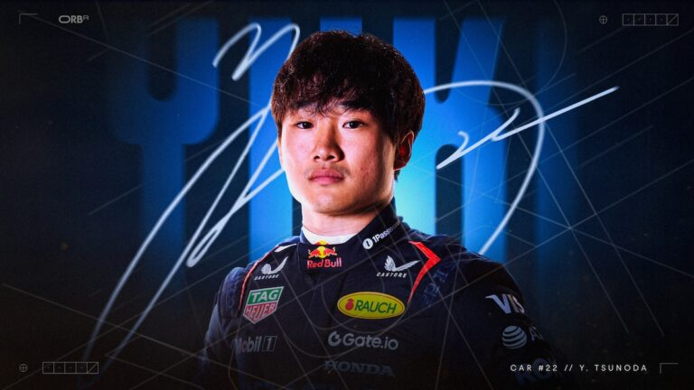

Tsunoda is the new Red Bull second driver for this season!
Red Bull officially announced this morning that Yuki Tsunoda will be the team's new driver for the 2025 season. The Japanese driver, who had been with AlphaTauri, is the team's major signing for the upcoming season following the announcement of Daniel Ricciardo's departure. Tsunoda, 23, has stood out in recent seasons for his consistency and speed, and now he will have the chance to showcase his talent alongside Max Verstappen in the Red Bull main team.
In his press conference, Tsunoda expressed great excitement for this new chapter in his career: "I am very happy and proud of the trust Red Bull has placed in my work. This is a unique opportunity and a big responsibility. My goal is to learn from Max and contribute to the team's success," said the driver. Red Bull, in turn, believes Tsunoda can bring even more competitiveness to the team, bringing a fresh approach and a strong work ethic.
With this move, Tsunoda joins a team that has dominated Formula 1 in recent years, and expectations for his performance are high. Red Bull, always striving for exceptional results, now has a refreshed lineup, with Verstappen and Tsunoda ready to fight for top positions in every Grand Prix. Tsunoda's debut in the Red Bull cockpit will be closely watched, especially considering his quick adaptation to the highest level of motorsport.